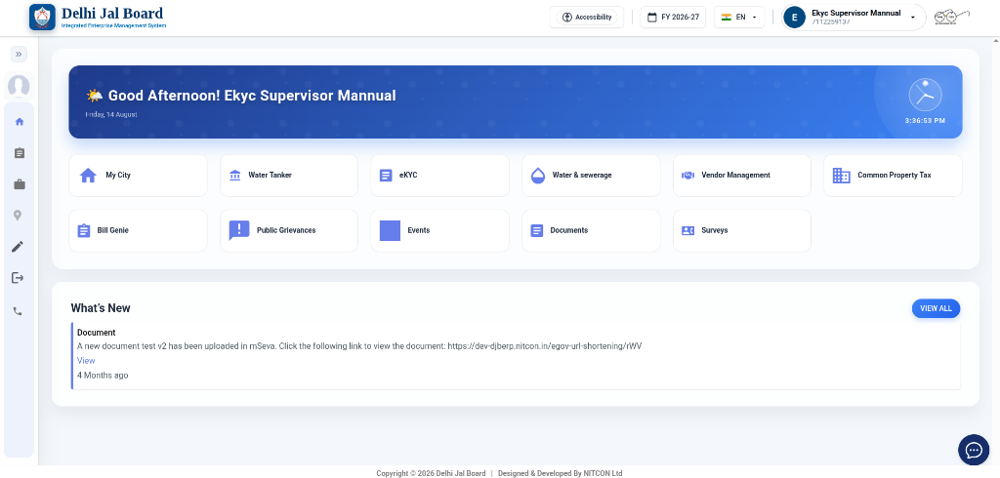
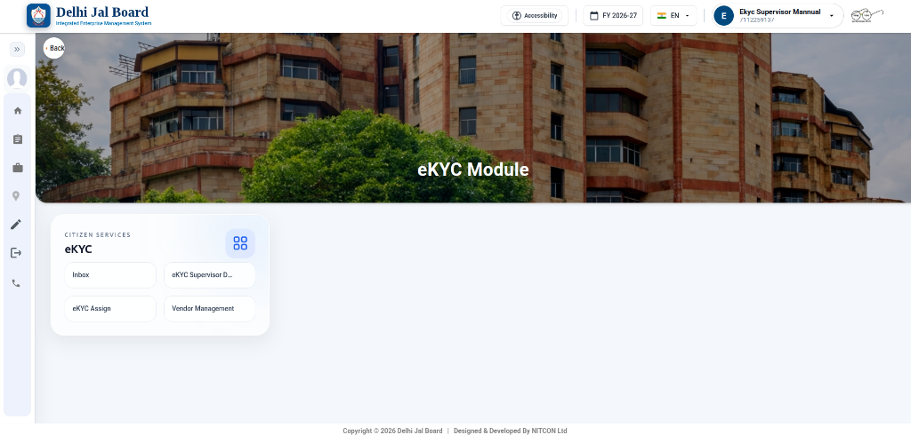
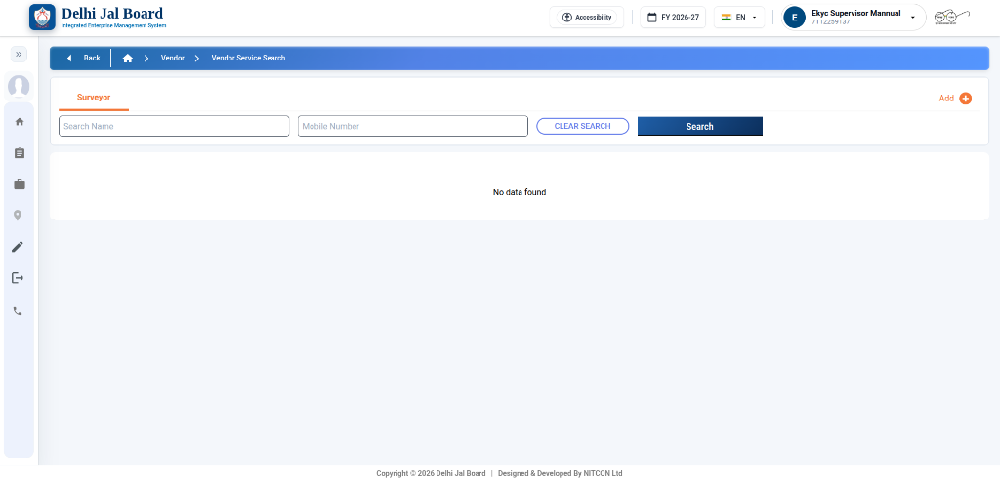
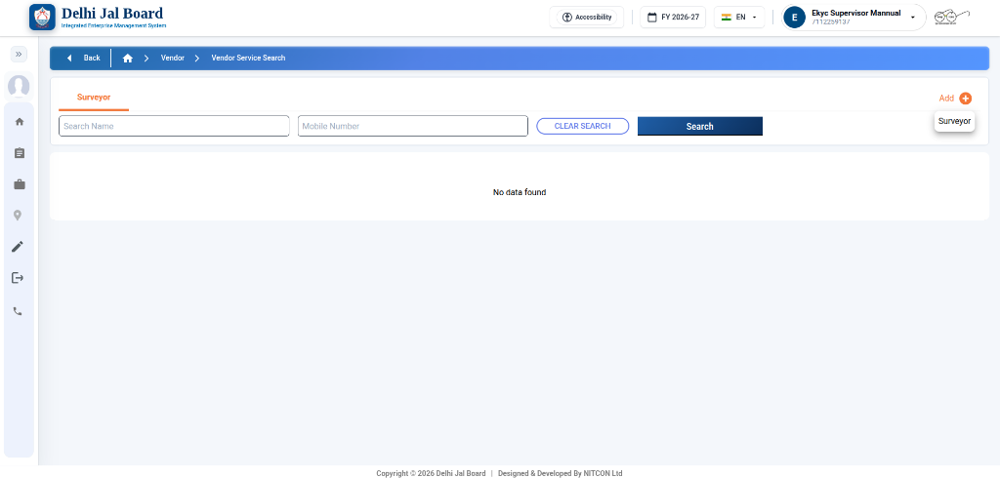
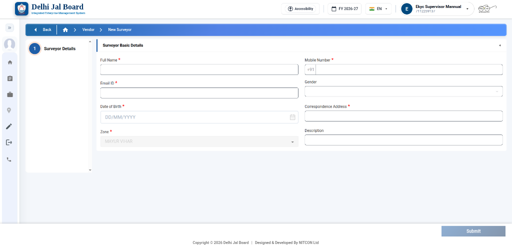
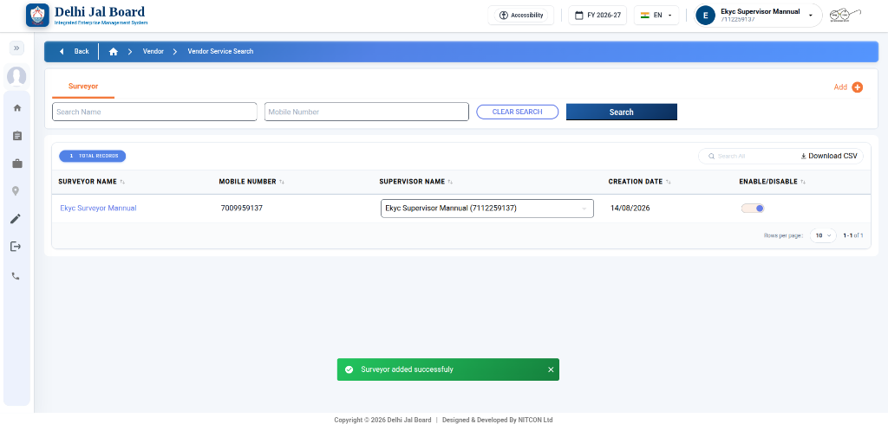

Field Surveyor Registration & Mapping Guide
What this page helps with: This manual guides Supervisors through registering and mapping operational Field Surveyors. It details navigating from the Supervisor Dashboard to Vendor Management, completing the New Surveyor registration form with mandatory zone & contact details, and managing mapped surveyors in the search list.
Step 1: Accessing eKYC Tile from Supervisor Dashboard
Navigating from the main Supervisor portal landing page to the eKYC module workspace.

Step 2: Selecting Vendor Management Card
Opening the eKYC Module workspace options and selecting Vendor Management.

Step 3: Vendor Service Search & Add Option
Viewing the Surveyor search tab and locating the Add button.

Step 4: Selecting Surveyor from Add Dropdown
Opening the action menu to launch the new surveyor registration form.

Step 5: Filling Surveyor Basic Details Form
Entering mandatory surveyor details and submitting for profile creation.
• Full Name *: Enter the surveyor's full legal name.
• Mobile Number *: Enter the 10-digit mobile number (`+91`).
• Email ID *: Enter the surveyor's active email address.
• Gender: Select gender from dropdown menu.
• Date of Birth *: Select or type date in `DD/MM/YYYY` format.
• Correspondence Address *: Enter residential / official postal address.
• Zone *: Select assigned operational zone (e.g. `MAYUR VIHAR`).
• Description: Enter optional operational notes or role details.

Step 6: Confirmation & Mapped Surveyor List View
Verifying creation success toast message and reviewing all mapped surveyors.
• Surveyor Name (e.g. Ekyc Surveyor Mannual)
• Mobile Number (e.g. 7009959137)
• Supervisor Name (e.g. Ekyc Supervisor Mannual)
• Creation Date (e.g. 14/08/2026)
• Enable/Disable toggle status switch.
